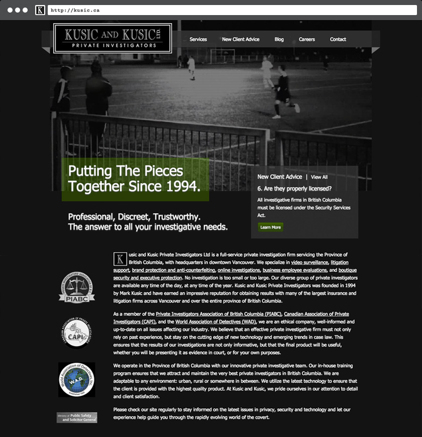
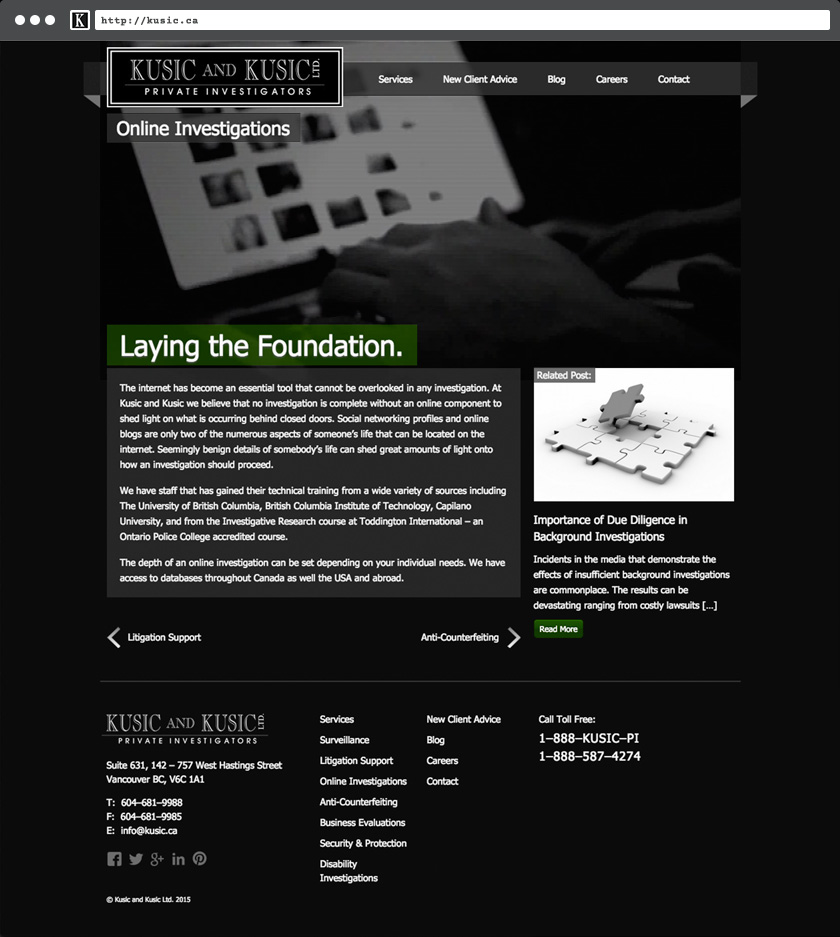
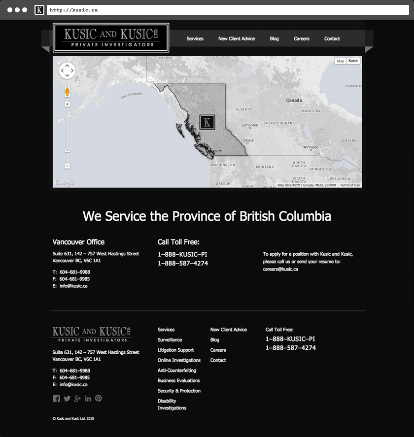

Kusic & Kusic Private Investigators
A tech-savvy Private Investigation firm needed a site that could communicate its use of bleeding-edge technology in the field and an ongoing commitment to ethical surveillance practise.
The Private Investigations industry can come across as a dark and murky place and many PI firms play up this idea in their branding. Kusic & Kusic is no exception — sometimes that's exactly what the customer is after. What Kusic & Kusic does differently is that for every step taken to play up their image, they make equal effort to educate customers about the private investigations industry and how they keep their surveillance practice ethical. The site is a showpiece no doubt, but it is also an accurate and honest account of what Private Investigators do and to whom they are held accountable.
The home and service pages feature background video from non-investigative ride-alongs and staged surveillance scenarios.
Each category of service features unique video backgrounds that illustrate actual surveillance techniques.
A regularly updated blog features topical news stories, while a 'New Client Advice' matrix suggests questions that potential customers might consider to ask when hiring a Private Investigator.
As many surveillance cases go beyond the limits of the city, a custom Google Map communicates the geographic area the company primarily services.
Conclusion
The Kusic & Kusic site adds useful layer of information to support a brand image that takes its cues from the world of counter-intelligence and secrecy. It offers an abundance of public information about the industry and aims to educate potential clients who are deciding whether or not to engage a private investigator.